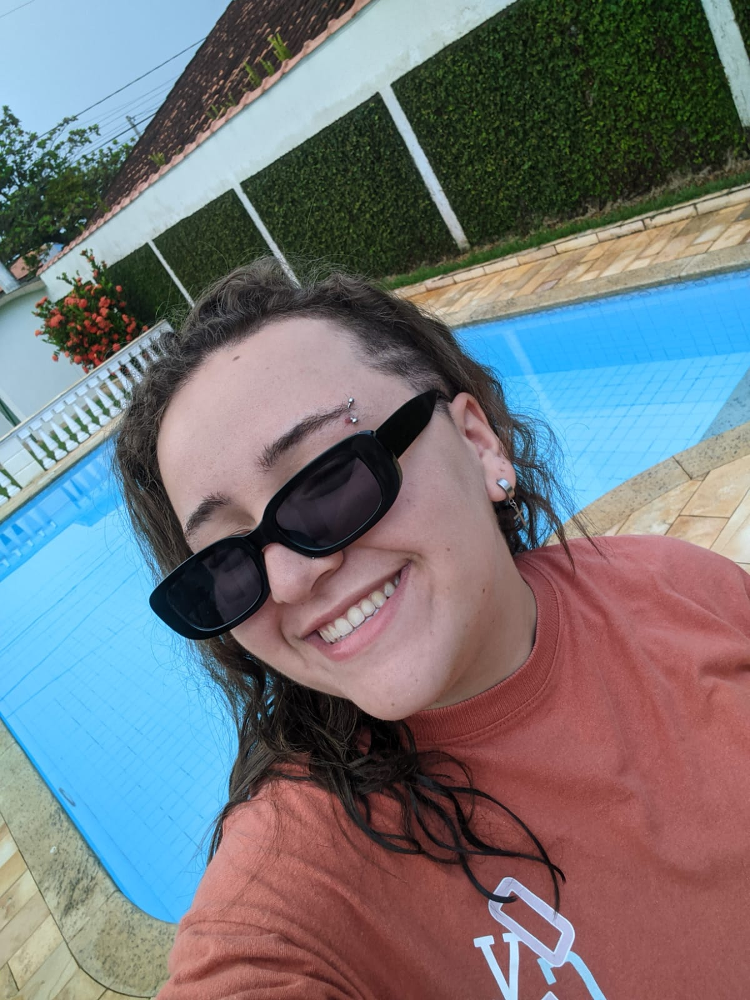
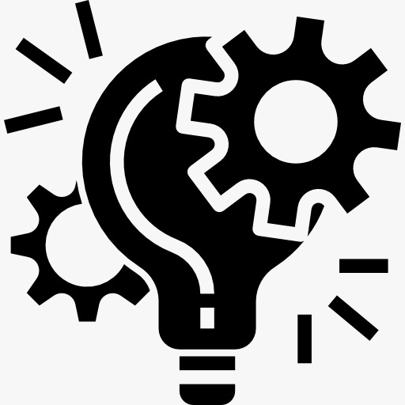

FEV 2026
Tecnologia em Análise e Desenvolvimento de Sistemas
Centro Universitário Internacional — UNINTER
Graduação concluídaTecnóloga em Análise e Desenvolvimento de Sistemas
Interesse em tecnologia, desenvolvimento e criação de soluções digitais funcionais e bem organizadas.

Sou formada em Análise e Desenvolvimento de Sistemas pela UNINTER. Tenho perfil proativo, curiosidade para aprender e interesse em transformar ideias em experiências digitais claras e funcionais. Meu próximo objetivo acadêmico é cursar Engenharia de Software para aprofundar meus conhecimentos e ampliar minha formação na área de tecnologia.
Gosto de explorar tecnologia e design de interfaces. Fora dos estudos e projetos, também aproveito meu tempo com família e amigos, música, jogos, filmes e séries.
Centro Universitário Internacional — UNINTER
Graduação concluída
Protótipo desenvolvido no Figma durante a graduação, com foco em interface, organização visual e experiência de navegação. O projeto permitiu explorar conceitos de UI/UX e prototipagem digital.
Abrir protótipo no FigmaVocê pode conhecer meu trabalho e entrar em contato pelos canais abaixo.